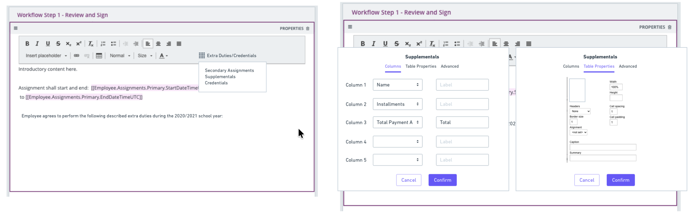
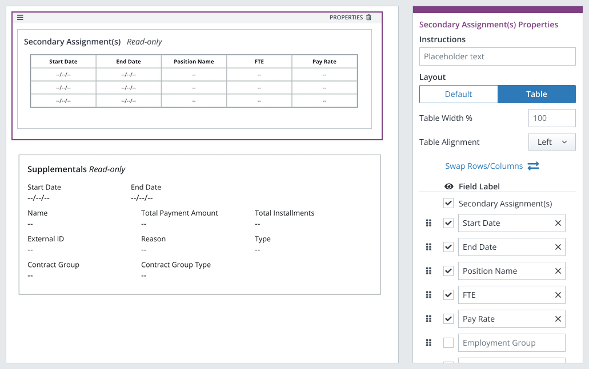

Reducing Risk in a High-Stakes Workflow
Designing for accuracy and confidence during the highest-pressure week in K–12 administration.
The Brief
Annual contracting in K–12 districts is one of the highest-stakes workflows in school administration. A single distribution error can affect hundreds of employees at once, creating compliance risk, rework, and significant burden on support teams.
Frontline Central's contracting tools weren't keeping up with how districts actually worked. Districts were forced to create multiple contracts per employee, make distribution decisions without adequate guidance, and lean heavily on manual workarounds during the most time-sensitive weeks of the year.
Based on existing customer research and analysis of 38 real district contracts, I proposed and led a design direction that made contracting more accurate, less error-prone, and significantly more trusted.
Outcome
Within six months of release, the redesigned tools drove a 34% increase in adoption of annual contracting features — from 40% to 65% of eligible districts. Support tickets related to contract forms dropped 27% during peak contracting season.
What I Did
- Synthesized existing customer research and analyzed 38 real contracts to identify workflow patterns and design requirements
- Led interaction design from early exploration through clickable prototypes modeling complex scenarios and edge cases
- Facilitated collaborative design sessions with Product and Engineering
- Presented design recommendations and research findings to stakeholders
- Partnered with Engineering throughout development to ensure designs remained technically feasible
- Led design reviews with the broader UX team to validate patterns
Methods
- Research synthesis
- Contract analysis (38 documents)
- Low-fidelity wireframes
- Clickable prototypes
- Usability testing
- Stakeholder presentations
- Cross-functional design sessions
The Problem
As districts moved toward digital contracting, the same problems kept surfacing. A teacher's employment agreement might include a primary role, an additional ongoing responsibility, and a supplemental certification — three distinct assignments with different compensation structures. The system had no way to represent all three in a single contract. So districts worked around it by generating multiple contracts per employee, then tracking them manually, then reconciling them later. During peak contracting season, when administrators might be processing hundreds of contracts under tight deadlines, that overhead compounded fast.
The distribution step made it worse. Whether assignments should be issued as one consolidated contract or as separate contracts varies by state regulation and district policy — and that decision was happening at the exact moment an administrator clicked Send, often without enough information to make it confidently. Errors at that stage are difficult to reverse and costly to correct.
Identifying the Opportunity
This initiative grew out of patterns that surfaced consistently in existing customer research: districts calling in during peak season, administrators relying on Customer Support to navigate distribution decisions, teams building their own tracking spreadsheets to compensate for what the system couldn't do.
I focused on two moments where the risk was highest and the design gap was clearest: how contracts were modeled during creation, and how distribution decisions were made at the point of sending. Both problems were connected, and solving them in sequence allowed us to build the second solution on the foundation of the first.
Gathering Insights
Contract analysis
Previous design decisions had been made based on institutional knowledge and assumptions about how districts structured employment agreements. To get to the reality of how those agreements actually worked, I analyzed 38 real contracts collected from districts across multiple states through prior customer research.
Terminology varied. Formatting varied. But the underlying structure didn't.
Three assignment types covered nearly everything. Across 38 documents and roughly 20 distinct template formats, the same three categories appeared repeatedly: a primary assignment covering the employee's core role and base salary, a secondary assignment for ongoing additional responsibilities compensated throughout the year, and a supplemental assignment for certifications or limited duties with one-time or split compensation. That abstraction was the key insight — it let us support real-world complexity without encoding state-specific language or brittle edge cases.
Multiple contracts per employee was a workaround, not a workflow. Districts weren't creating separate contracts because it was the right approach. They were doing it because the system gave them no other option. The administrative overhead was real, and it was concentrated in the weeks when administrators had the least capacity to absorb it.
Distribution errors were the highest-consequence failure mode. Mistakes during distribution — sending the wrong contract configuration to the wrong group, or issuing assignments separately when they should have been consolidated — were both common and difficult to fix. The decision point where those errors happened was also the least supported moment in the existing workflow.
Customer research synthesis
Beyond the contract analysis, existing customer research surfaced the human cost of these gaps. Administrators described manually emailing staff to follow up on contract status. Customer Success teams described fielding spikes in support tickets every spring. Districts with complex employment structures described avoiding the digital contracting tools altogether during crunch time because the risk of getting it wrong was too high.
The pattern was consistent: the system was losing trust at exactly the moments when administrators needed to rely on it most.
Design Process
Early exploration and a necessary pivot
Before settling on a direction, I explored representing multiple assignments inline using the existing Rich Text Editor with tokenized data. On the surface, it had appeal: administrators would retain full formatting control, and it wouldn't require new infrastructure.
Two problems made it unworkable. First, the third-party rich text editor the form builder relied on couldn't be reliably customized without significant engineering investment and ongoing maintenance risk. Second, early wireframes showed the experience was genuinely fragile: it placed a high cognitive burden on administrators to format complex assignment data correctly, in a context where getting it wrong had real consequences.

I presented these findings to the product team and made the case for a different direction. The pivot wasn't a compromise — a more opinionated approach would actually serve administrators better under pressure than a flexible one that required them to get the structure right themselves.
Modeling multiple assignments
I reframed the problem: how might we support multiple assignments within a single contract while preserving clarity, usability, and technical feasibility?
The answer was a structured table layout built on existing Form Builder patterns. Rather than asking administrators to construct assignment data through free-form formatting, the interface represented Primary, Secondary, and Supplemental assignments clearly and consistently: scannable at a glance, accurate by design.

We validated this approach through usability testing with eight district administrators representing a range of contract complexity. The structured format was understood in under 30 seconds. The free-form approach had taken two minutes or more. The difference wasn't minor: it was the difference between a tool administrators would trust under deadline pressure and one they'd avoid.
This assignment model became the foundation for everything that followed.
Reducing risk at distribution: Contract Groups
With the assignment model established, the next problem came into focus. Even if contracts were accurately structured, the distribution step still lacked the clarity administrators needed to act confidently. Whether assignments should be issued as one consolidated contract or as separate contracts is a consequential decision, and it was happening at the exact moment of highest risk, with the least support.
I designed the Contract Groups distribution option to surface that decision explicitly at the point of sending. The interface breaks the decision into two clear layers: who is receiving the contract, and how assignments should be issued. Radio controls and defaults guide administrators toward common patterns while preserving precise control where regulations require it. A visual preview lets administrators validate the resulting contract structure before committing to an action that might affect hundreds of employees at once.

The design borrowed from the mental model already established during contract creation: the same Primary, Secondary, and Supplemental assignment types that structured the contract template also structured the distribution decision. Consistency between the two moments reduced cognitive load and made the higher-stakes step feel continuous with the work that came before it.
Making consequences visible
The most important design principle throughout this project was that the interface should make the consequence of each decision legible before administrators committed to it. This was especially true at distribution, where the preview component carried significant weight: not as a nice-to-have confirmation, but as the primary mechanism for catching errors before they propagated at scale.
Collaborating on technical constraints
Throughout both workstreams, I worked closely with Engineering to make sure the designs remained feasible. Several early ideas had to flex when we got closer to implementation realities. In each case, the constraint produced a cleaner solution — one that relied on existing system patterns rather than requiring new infrastructure to support.
Outcome
34% increase in adoption of annual contracting features within six months of release — from 40% to 65% of eligible districts.
27% drop in support tickets related to contract forms during peak contracting season.
Administrator confidence in contract accuracy and compliance improved measurably. The design didn't just reduce errors — it reduced the anxiety that was causing administrators to avoid the tools altogether during the weeks they needed them most.
Key Takeaways
- Structure beats flexibility in high-stakes workflows. The pivot from free-form rich text to a structured table wasn't a concession — it was the better design. Opinionated, scannable representations reduce cognitive load and error risk when decisions are irreversible and affect hundreds of people at once.
- The most important UX decisions happen at moments of consequence. Optimizing the contract creation experience mattered, but designing clarity into the Send action mattered more. Anticipating user anxiety and error risk at critical junctures is where enterprise UX creates measurable value.
- Abstraction enables scale. Modeling assignments conceptually, rather than encoding state-specific language or district-specific edge cases, let the solution accommodate regulatory variation without brittle, hard-to-maintain logic underneath it.
- Enterprise UX success is operational. A 34% adoption increase and a 27% support ticket reduction are design outcomes. Reducing errors and support burden during peak season translated directly to time, cost, and trust — for administrators, for districts, and for the product.